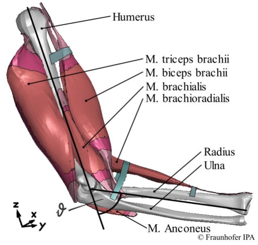

PerSiVal: deep neural networks for pervasive simulation of an activation-driven continuum-mechanical upper limb model
(opens in new tab)
Venue. Medical \& Biological Engineering \& Computing (2026)
Materials.
DOI(opens in new tab)
Abstract. This paper introduces a novel densely connected neural network architecture designed for the pervasive visualisation of musculoskeletal system simulations. These simulations are built upon continuum-mechanical frameworks, which effectively integrate the diverse structural and physiological properties of the musculoskeletal system. A significant drawback of continuum-mechanical musculoskeletal models is their substantial computational resource requirement, making them difficult to transfer to/visualise the results on resource-poor systems like augmented reality or mobile devices. Such technologies, however, will be crucial for future advancements in human-machine interaction, surgical support tools, or physiotherapy. We use an activation-driven five-muscle continuum-mechanical upper limb model to obtain the activation-induced deformations of the respective muscles. Exemplified on the m. biceps brachii, we fit a sparse grid surrogate to capture the surface deformation and train a deep learning model that is subsequently used in our real-time visualisation. Based on the activation levels of the five muscles, the result of our trained neural network leads to an average positional error of 0.97\textpm0.16 mm, or 0.57\textpm0.10\% for the 2809 mesh nodes of the m. biceps brachii's surface. With the novel deep neural network model, we achieved evaluation times for the m. biceps brachii's surface deformation of 9.88 ms on CPU-only architectures and 3.48 ms on architectures with GPU support. This leads to theoretical frame rates of 101 fps and 287 fps, respectively. The combination of surrogates and deep neural networks presented here succeeds as a proof-of-concept for real-time visualisation of a complex musculoskeletal system model, and does not rely on the inherent characteristics of the musculoskeletal system, and, hence, is also applicable to other real-time visualisations of complex meshed models in other applications.
Link to this page: